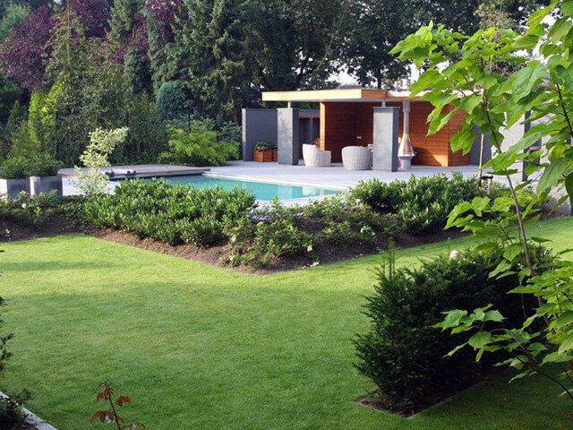
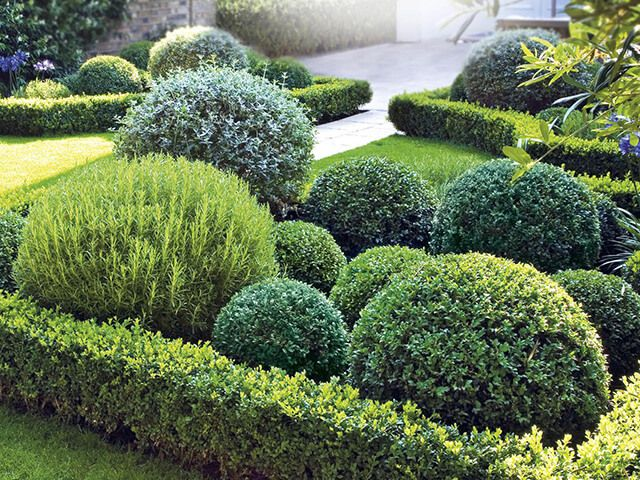
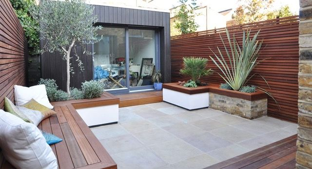
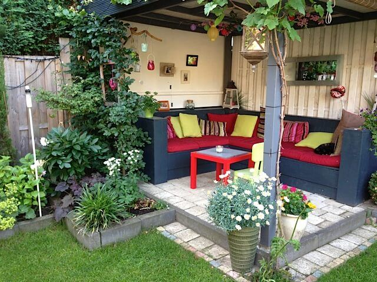
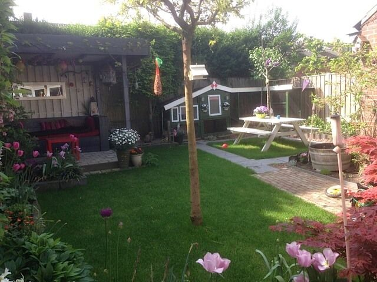
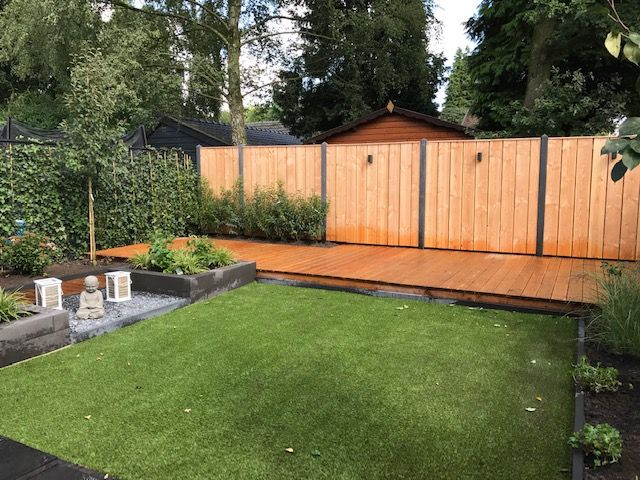
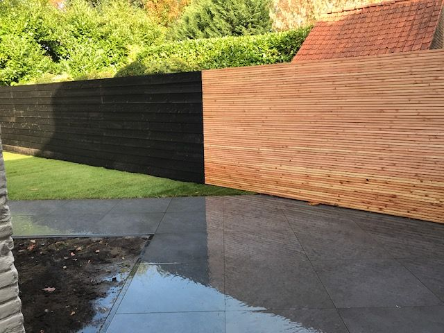
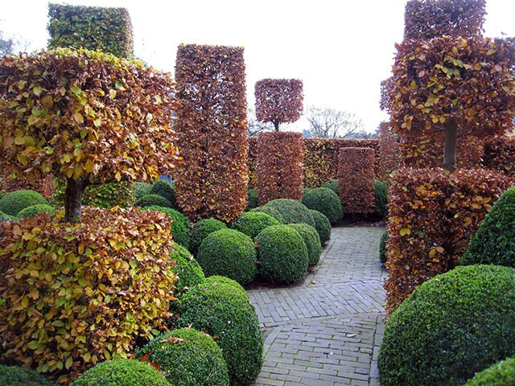
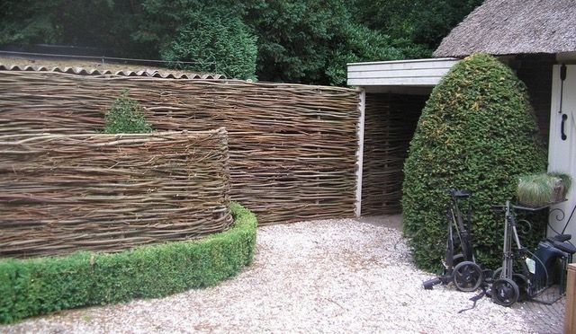
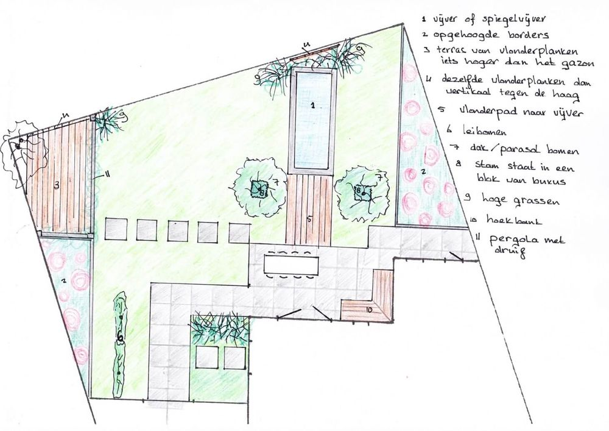

Tuinaanleg
Van bodemegalisering tot het aanleggen van plantenbakken en tuinbestrating. Ook schutting, overkapping, terrastegels, tuinverlichting en voortuin.
Hovenier uit Effen, werkzaam rond Breda
Wij staan voor een sfeervolle buitenomgeving die volledig aansluit bij uw wensen. Voor particulieren, bedrijven en overheidsinstellingen.

Van bodemegalisering tot het aanleggen van plantenbakken en tuinbestrating. Ook schutting, overkapping, terrastegels, tuinverlichting en voortuin.

U betaalt enkel voor de onderhoudsdiensten die u afneemt. Eenmalig herstel of jaarrond onderhoud, beide kan. Ook boomverzorging.

Advies over welke planten het best in uw tuin passen, op basis van tuinligging, budget en uw groene vingers. Heeft u een idee voor een nieuwe indeling? Wij bespreken het graag.

Een bedrijfstuin is een prachtig visitekaartje en draagt bij aan het werkplezier. Groenvoorziening, kantoorbeplanting en bloembakservice, in de lente fleurig en in de herfst wintergroen.








Geen doorschuifsysteem. U heeft directe communicatie met de hovenier die ook zelf op locatie komt. Dat zorgt voor duidelijkheid, snelheid en maatwerk.
In de meeste gevallen kunnen we binnen 2 tot 4 weken starten na de aanvraag.
“Groenservice de Moeren is een heel goede hovenier in regio Breda, men kwam heel snel langs, over de prijs waren we het direct eens en ze hebben zich keurig aan hun afspraak gehouden.”Dhr. Meije uit Breda
Effen · Breda · Teteringen · Prinsenbeek · Bavel · Ulvenhout · Etten-Leur · Oosterhout · Rijsbergen · Zevenbergen · Dongen · Tilburg
Heeft u een vraag of wilt u een vrijblijvende afspraak of offerte? Neem contact op met Richard Moerenhout.
06-10711744